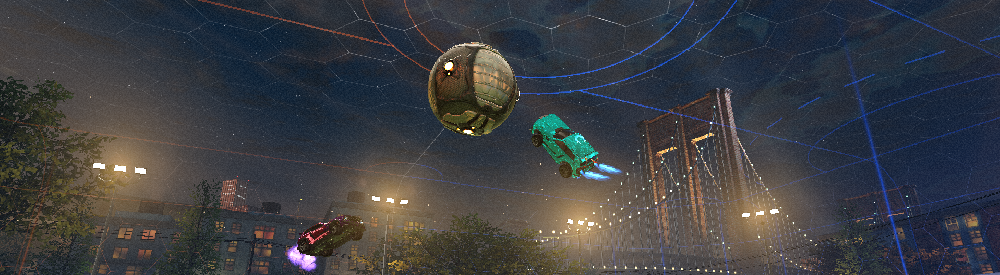
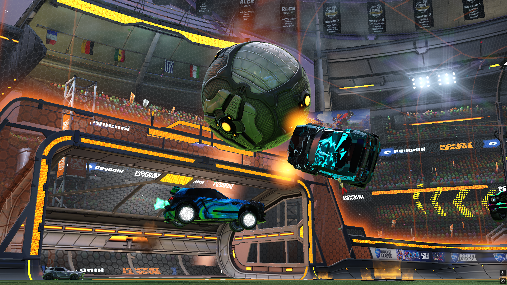
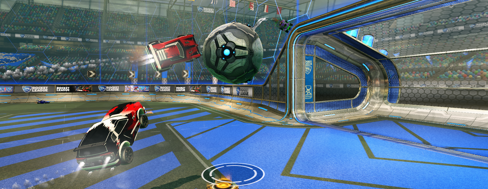

How has Rocket League been part of my life?
Rocket League has been one of the few games I have had any notable success in competitively reaching top 7% worldwide in main modes and 3% in alternate modes. I have been playing on and off for 5 or so years. While it is a competitive outlet it is also just a fun game to sit down and play with the guys even when we lose until it isn’t of course…

What emotions or memories are attached to it?
I find it’s a game that brings both Joy and Anger, it’s a competitive game and no one likes losing in a competitive environment, but when you step out of the competitive side and just play the game for fun with the guys its pure laughter. And while players may take to spamming “What A Save!” when you can’t save a shot we all know who’s really winning when the teams are 3 solo players vs 3 guys in a call goofing off. At the same time it's a great way to stay connected with friends by simply sharing a competitive environment. At the same time I don't know a single player who dosent remember their first tournement win no matter what rank it was at the time. I still play with the guys I won my first tournement with 4 years later

Why would others appreciate it as much as you do?
That’s the neat part, they likely won’t! It’s a complicated physics-based game that has skill-based matchmaking, so you rarely play matches where you are clearly better than your opponents. Generally speaking, the entire lobby is averaged out to a similar skill level. When you start the games stay grounded and uncontrolled but as players get better, they learn to control the ball even when its in the air or learn to read its bounces off the walls to predict where it will be the shoot off a rebound to score which creates a quite fun loop where you can see personal improvement over time despite it not being apparent in every game.
